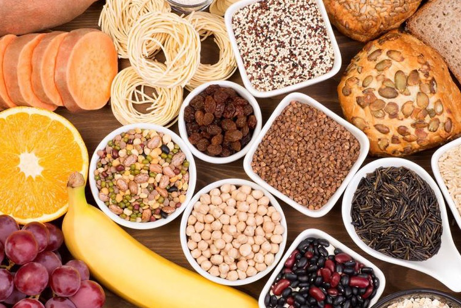

Pretraga namirnica
Nutritijenti
Izaberi namirnicu sa leve strane.
MVP: pretraga namirnica, prikaz nutritijenata, vizuelizacije u D3.js, poređenje i izračun ukupnih vrednosti obroka.

Ideja aplikacije je da nutritivne informacije učini dostupnim i razumljivim bez komplikovanja. Umesto nepreglednih tabela, podaci se prikazuju jasno i vizuelno, tako da korisnik brzo dobija uvid u ključne vrednosti.
MVP omogućava pretragu namirnica, pregled kalorija i makro/mikronutrijenata po standardnoj meri (na 100g), poređenje dve namirnice kroz drugačiju vizuelizaciju, kao i sastavljanje obroka sa ukupnim nutritivnim vrednostima. Dodata je i informativna sekcija laboratorijskih parametara, bez medicinskih zaključaka.
Radar prikaz poredi: kalorije, proteine, UH i masti (na 100g). Vrednosti su normalizovane radi poređenja (vizuelna razlika, ne medicinski zaključak).
Izaberi više namirnica i unesi gramažu. Sistem računa ukupne kalorije i makronutrijente za ceo obrok.
Stacked bar prikaz makronutrijenata (g) za ceo obrok.
Ova sekcija služi samo za objašnjenje osnovnih parametara i tipičnih referentnih opsega. Aplikacija ne daje dijagnoze i ne zamenjuje savet lekara.